| 日付 | 2013年7月7日（日） |
|---|---|
| 山域 | 高尾周辺 |
| メンバー | 家族（長女・2歳） |
| 山行形態 | 子連れ日帰り |
| アクセス | 車、ケーブルカー |
| ルート (Map) | ケーブルカー高尾山駅 (9:54) - 4号路 - (11:13) 高尾山 (11:54) - 1号路 - (12:37) ケーブルカー高尾山駅 |
下の子（長男）が産まれてから初めての山登り。
今回も長女を連れて2人で山に向かう。
今後キャリアは長男を背負うために使うことになるので、
長女にはそろそろ山を歩くように仕向けなければならない。
キャリアを持っていくと乗せろとうるさく言いそうなので
今回はキャリアを持って行かないことにする。
行先は家から近く、2歳児でも登れそうな高尾山を選択。
ケーブルカーを使えば往復1時間半程度の行程だ。
高尾山薬王院祈祷殿駐車場に車を停める。
周りの駐車場がだいたい1日1000円なのに対し、ここは1日500円で停められる。
ただし、ケーブルカーの駅からは少しだけ離れている。
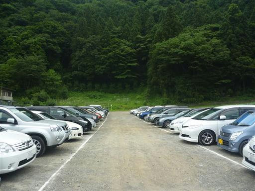
土産物屋が軒を連ねる道を歩いて、ケーブルカーの駅を目指す。
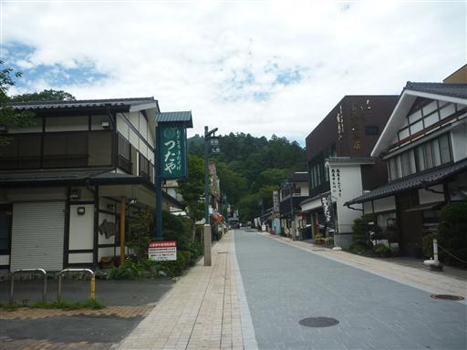
ケーブルカー清滝駅に到着。5分ほど待ったら出発の時間だ。
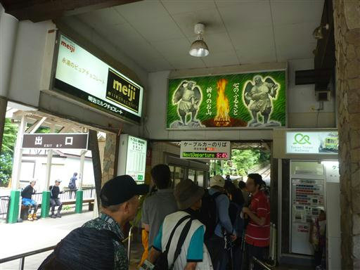
最前列の立見席に陣取る。子供は珍しく車窓からの景色を見て喜んでいる。
窓が開いているので風が入ってきて涼しい。
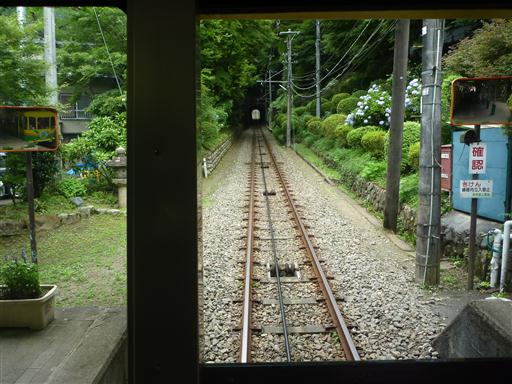
高尾山駅で降りたら早速歩き出す。標高450m。
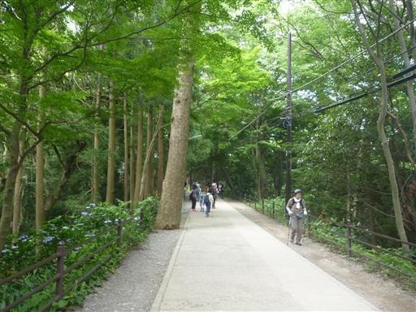
舗装路をずっと歩くのは嫌なので、1号路を外れて4号路に入っていく。
土の道になると子供は元気になってスタスタ歩きだす。登山道の方が好きなようだ。
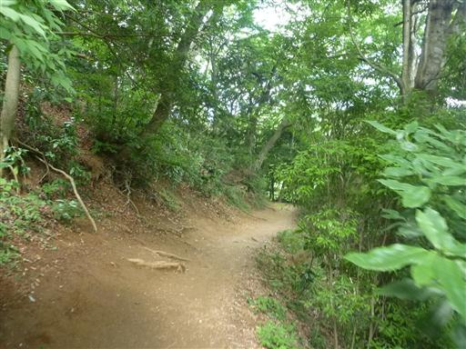
小さな吊橋を渡る。
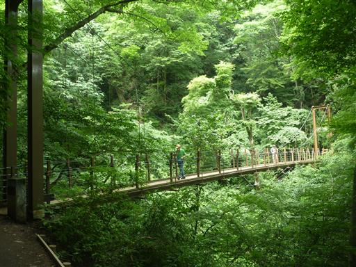
橋から下を覗きこむ。水がほとんど流れていないジメッとした沢だ。
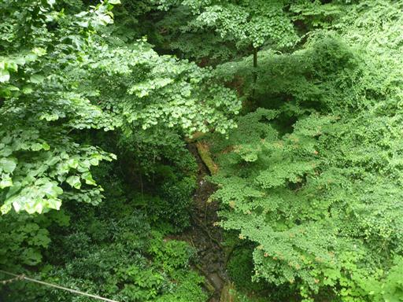
最初は水平な道が続いていたが、途中から階段が現れだす。
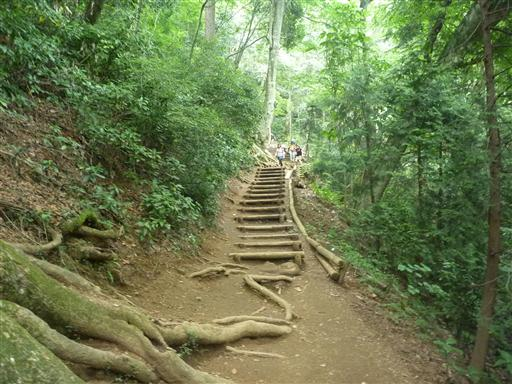
比較的緩やかな登山道ではあるが、小さな子供ではなかなか大変そうだ。
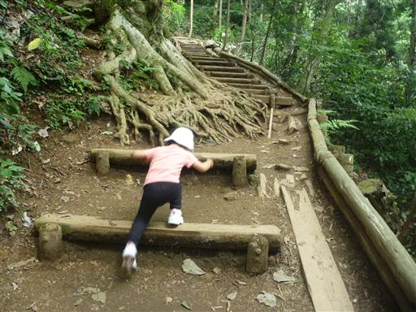
休憩ポイントに到着。ベンチに座ってお茶を飲んで、5分ほど休憩したら出発だ。
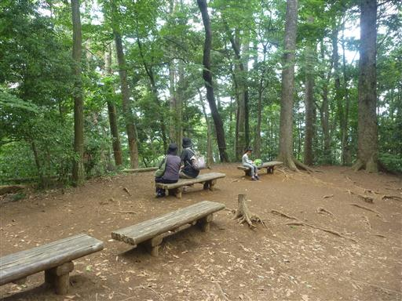
山頂まであと5分ほどのところで疲れてしまったようで、抱っこ抱っことうるさくなる。
座って休憩し、お菓子をあげて、山頂に着いたらおにぎりを食べよう、もうすぐ山頂だ、
と何度も励まし、ようやく歩き始める。
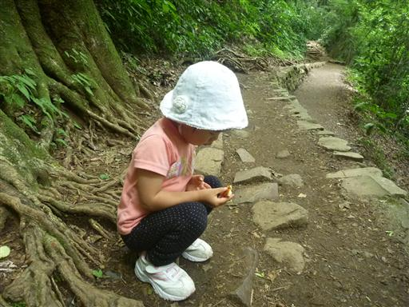
山頂直下で1号路と合流。歩き始めたら早いものだ。
元気良く歩いているので、体力的にはまだまだ大丈夫そうだ。
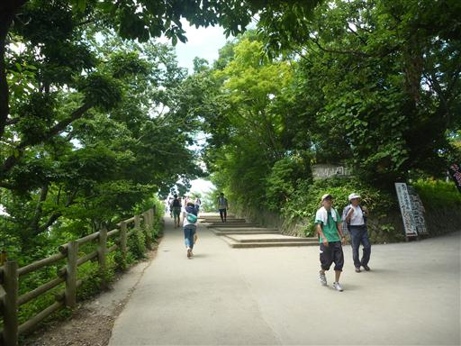
そして、ようやく高尾山山頂に到着する。標高599m。
2歳4か月にして初めての自分の足で山頂まで歩けた山となった。
だいぶ時間はかかったが、これだけ歩ければ上出来だろう。

暑い季節なのだが山頂は大勢の観光客で賑わっている。
日影の一角に腰を下ろして待ちに待った昼食タイムだ。
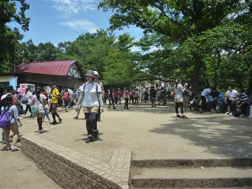
昼食をとったら展望台から景色を眺める。霞んではいるが周りの山々のシルエットが見えている。
子供は展望には興味がないので、チラッと景色を見たら下山開始だ。
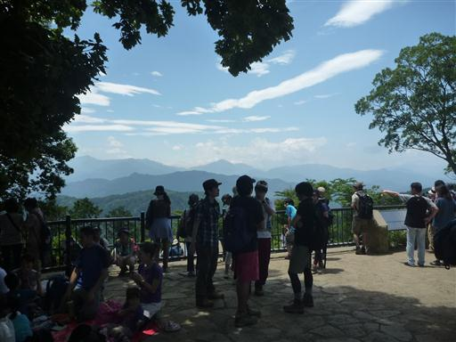
下山は1号路を下ることにする。こちらの道はほとんどが舗装路だ。
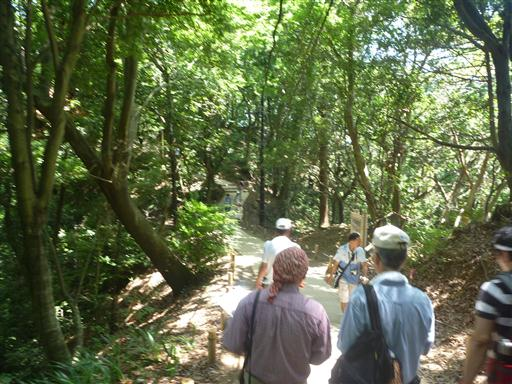
薬王院などを見物しながら下って行く。
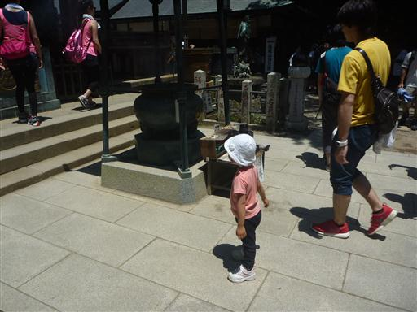
登り下りは石段がずっと続く。登りの人は大変そうだ。
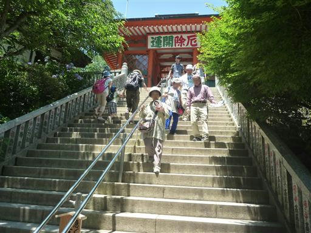
1号路はメインロードだけに人が多い。子供もよく見かける。
昼を過ぎてだんだんと暑くなってきた。
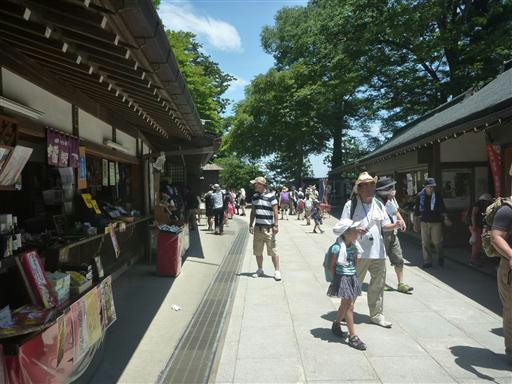
この石を潜ると願いが叶うそうだ。子供と一緒に潜ってみる。
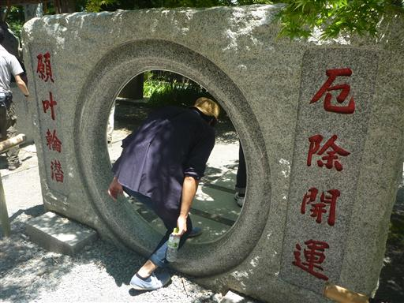
道の脇にはアジサイが見事な花を咲かせている。
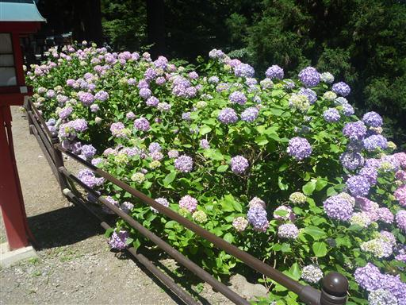
無事に高尾山駅に到着。下りは文句も言わずスタスタ歩いてくれた。
ケーブルカーを目指して歩いているのがうれしかったようだ。
終盤はかなり暑かったが、往復2時間弱の行程をよく頑張って歩いてくれた。
山に慣れさせるためにも、何度か高尾山に来て同じコースを歩いてみようと思う。